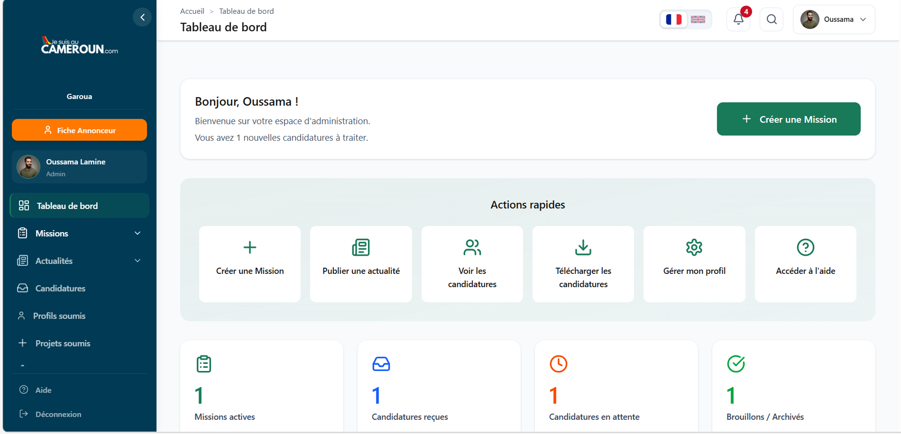
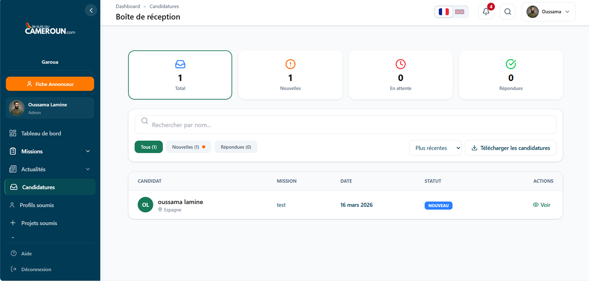
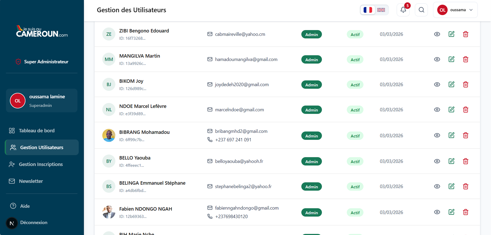
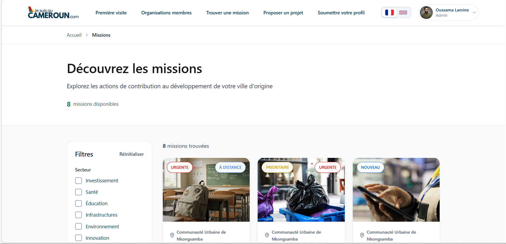

Rapport d'avancement
de la plateforme
État des lieux, fonctionnalités livrées & travaux restants
Confidentiel — Usage interne
jesuisaucameroun.com
État des lieux, fonctionnalités livrées & travaux restants
Rapport d'avancement — Mars 2026
| N° | Section | Page |
|---|---|---|
| 1 | Vue d'ensemble & indicateurs clés | 3 |
| 2 | Architecture technique | 3 |
| 3 | Site public — Pages livrées | 4 |
| 4 | Panneau d'administration | 5 |
| 5 | Panneau Superadmin | 6 |
| 6 | Backend & Infrastructure | 7 |
| 7 | Correctifs critiques — Tous résolus ✓ | 8 |
| 8 | Travaux restants — Traduction (i18n) | 8 |
| 9 | Travaux restants — Améliorations | 9 |
| 10 | Récapitulatif & prochaines étapes | 10 |
Rapport d'avancement — Mars 2026
| Framework | Next.js 16.1.6 (App Router) |
| UI | React 19 + Tailwind CSS |
| Base de données | Supabase (PostgreSQL + RLS) |
| Auth | Supabase Auth (email/mot de passe) |
| i18n | next-intl v4 (FR/EN) |
| SMTP via Nodemailer | |
| Hébergement | Digital Ocean |
profiles | Utilisateurs |
annonceur_profiles | Organisations |
opportunites | Missions |
candidatures | Candidatures |
actualites | Actualités |
notifications | Notifications |
newsletter_subscriptions | Newsletter |
static_contents | Contenu CMS |
pre_inscriptions | Pré-inscriptions |
profils_soumis | Profils diaspora |
projets_soumis | Projets soumis |
Rapport d'avancement — Mars 2026
L'ensemble des 15 pages du site public sont fonctionnelles et déployées.
| Page | Description | Statut | i18n |
|---|---|---|---|
| Page d'accueil | Hero, missions vedettes, stats, FAQ, newsletter | Livré | OK (CMS) |
| Liste des missions | Listing avec filtres (domaine, timing, distance) | Livré | OK |
| Détail mission | Fiche complète avec URL SEO à slug | Livré | OK |
| Formulaire candidature | Formulaire multi-étapes avec upload fichier | Livré | OK |
| Liste actualités | Listing avec filtres latéraux | Livré | OK (CMS) |
| Détail actualité | Article complet avec métadonnées | Livré | OK |
| À propos | Équipe, valeurs, partenaires, impact | Livré | OK (CMS) |
| Comment ça marche | Étapes, garanties, types de contributions | Livré | OK (CMS) |
| Première visite | Page d'onboarding pour nouveaux visiteurs | Livré | OK (CMS) |
| Contact | Formulaire avec envoi email | Livré | OK (CMS) |
| Soumettre profil | Formulaire de soumission profil diaspora | Livré | OK |
| Soumettre projet | Formulaire de soumission d'idée de projet | Livré | OK |
| Fiche ville | Page profil de ville/organisation | Livré | OK (CMS) |
| Mentions légales | Page légale obligatoire | Livré | OK (CMS) |
| Protection données | Page RGPD / protection des données | Livré | OK (CMS) |

Figure 1 — Page d'accueil avec hero, missions vedettes et statistiques
Rapport d'avancement — Mars 2026
Le panneau d'administration est 100% fonctionnel. Il permet aux Admins et Annonceurs de gérer leurs missions, candidatures, actualités et paramètres.
| Module | Fonctionnalités incluses | Statut |
|---|---|---|
| Tableau de bord | 4 KPIs dynamiques, actions rapides, tableau des candidatures récentes, export Excel | Livré |
| Gestion missions | Créer, modifier, prévisualiser, publier/brouillon, formulaire multi-étapes complet | Livré |
| Gestion actualités | Créer, modifier, publier, image principale, pièces jointes, priorité, épinglage | Livré |
| Boîte candidatures | Inbox, filtres par statut, recherche, détail complet, changement de statut, export Excel | Livré |
| Profils soumis | Liste, filtres, recherche, détail modal, changement de statut, export Excel | Livré |
| Projets soumis | Liste, filtres, recherche, détail modal, changement de statut, export Excel | Livré |
| Gestion utilisateurs | Créer, modifier, désactiver des comptes, invitation par email avec mot de passe | Livré |
| Paramètres | 3 onglets : compte personnel, profil annonceur, gestion d'équipe | Livré |
| Notifications | Temps réel (Supabase Realtime), badge non-lus, page complète avec filtres | Livré |
| Recherche globale | Ctrl+K — recherche instantanée dans missions, actualités, candidatures, profils | Livré |

Figure 2 — Tableau de bord administrateur avec KPIs et actions rapides

Figure 3 — Boîte de réception des candidatures avec filtres et statuts
Rapport d'avancement — Mars 2026
Le panneau Superadmin offre une vue globale sur toutes les organisations et permet la gestion centralisée du contenu de la plateforme.
| Module | Fonctionnalités incluses | Statut |
|---|---|---|
| Dashboard global | Stats globales : utilisateurs, rôles, missions, candidatures, abonnés newsletter | Livré |
| Gestion utilisateurs | Tous les utilisateurs de toutes les organisations, création/modification/désactivation | Livré |
| Pré-inscriptions | Demandes d'inscription d'organisations, approuver/rejeter/archiver | Livré |
| Newsletter | Liste des abonnés, suppression, export CSV | Livré |
| CMS — Page d'accueil | Édition du hero, sections, statistiques, contenu dynamique | Livré |
| CMS — À propos | Message du président, partenaires, valeurs, équipe | Livré |
| CMS — Comment ça marche | Étapes, garanties, contributions | Livré |
| CMS — FAQ | Questions/réponses éditables | Livré |
| CMS — CGU, Mentions légales, Première visite | Contenu juridique et onboarding éditable | Livré |
| CMS — Organisations | Gérer la liste des villes et organisations membres | Livré |
| Éditeur bulk | Modification en masse du contenu via import/export Excel | Livré |

Figure 4 — Tableau de bord Superadmin avec statistiques globales

Figure 5 — Liste des missions avec filtres et recherche
Rapport d'avancement — Mars 2026
/admin et /superadminannonceur_id| Type d'email | Déclencheur | Statut |
|---|---|---|
| Contact — notification admin | Soumission formulaire de contact | Livré |
| Candidature — notification recruteur | Nouvelle candidature reçue | Livré |
| Profil soumis — notification admin | Soumission d'un profil diaspora | Livré |
| Projet soumis — notification admin | Soumission d'un projet | Livré |
| Pré-inscription — notification admin | Demande d'inscription organisation | Livré |
| Invitation — email de bienvenue | Création de compte par un admin | Livré |
| Rappel candidature (CRON) | Candidatures sans réponse > 14 jours | Livré |
| Alerte newsletter | Publication d'une nouvelle mission | Livré |
Rapport d'avancement — Mars 2026
| Tâche | Détails de la correction | Statut |
|---|---|---|
| Activer la vérification TypeScript | ~80 erreurs TypeScript corrigées dans 10 fichiers. Le flag ignoreBuildErrors est désormais à false. Le build de production compile sans erreur. |
Fait |
| Corriger la vulnérabilité XSS dans les emails | escapeHtml() appliqué à toutes les données utilisateur dans sendRecapEmail.ts (recipientName, labels, valeurs). Audit des 6 templates email : les 5 autres étaient déjà protégés. |
Fait |
| Protection anti brute-force sur le login | Nouvelle route API /api/auth/login servant de proxy serveur avec double rate-limiting : 5 tentatives / 15 min par IP et par email. Le client appelle désormais ce proxy au lieu de Supabase directement. |
Fait |
| Validation serveur pour les uploads | Nouvelle route API /api/upload avec validation MIME type (whitelist), extension, taille (max 10 Mo) et bucket autorisé. Les 3 pages publiques (Postuler, Soumettre Profil, Soumettre Projet) utilisent désormais cette API. |
Fait |
| Fichier | Correction | Statut |
|---|---|---|
PostulerOpportunite.tsx |
L'upload de fichiers en échec était silencieusement ignoré (continue). Corrigé : arrêt de la soumission avec message d'erreur, comme les 2 autres formulaires publics. |
Fait |
LoginAdmin.tsx |
Parsing JSON fragile : une réponse 502/HTML du serveur causait un crash SyntaxError. Corrigé : try/catch autour de res.json() avec message d'erreur utilisateur. |
Fait |
TableauDeBord.tsx |
Les filtres d'export utilisaient des valeurs incorrectes (en-attente, repondue, refusee) au lieu des valeurs DB (en_attente, repondu, archive). Export vide à chaque fois. Corrigé. |
Fait |
DetailCandidature.tsx |
Condition dupliquée s === 'nouvelle' || s === 'nouvelle' empêchant la détection du statut 'nouveau'. Corrigé en 'nouveau' || 'nouvelle'. |
Fait |
| Remarque | Détails | Priorité |
|---|---|---|
| Checkbox « Rester connecté » non fonctionnelle | Sur la page de login, la checkbox est affichée mais n'est liée à aucun état ni logique. Elle est cosmétique uniquement. | Faible |
| Bouton « Supprimer » sans action dans DetailCandidature | Le bouton affiche une confirmation mais le handler est vide (// Logic). Aucune suppression n'est effectuée. |
Faible |
| Notes non persistées dans DetailCandidature | Les notes ajoutées sont stockées en mémoire React uniquement. Un rafraîchissement de page les efface. | Moyenne |
| Imports inutilisés dans GestionProfiles / GestionProjets | Plusieurs icônes Lucide importées mais jamais utilisées dans le JSX (Mail, Phone, Linkedin, FileText, etc.). Code mort inoffensif. | Faible |
| Copyright 2024 dans le footer du TableauDeBord | Le footer affiche © 2024 alors que l'année courante est 2026. |
Faible |
next-intl, tandis que le contenu des pages publiques est géré dynamiquement via le CMS Superadmin.
Rapport d'avancement — Mars 2026
| Tâche | Détails | Priorité | Effort |
|---|---|---|---|
| Corriger les liens des villes dans le footer | 15 noms de villes pointent vers /missions au lieu de leurs pages /fiche-ville |
Haute | 1-2 h |
| Remplacer les informations placeholder | Numéro +237 XXX XXX XXX dans la page Contact, email support@ilab.tn dans les pages d'aide |
Haute | 30 min |
| Héberger le logo localement | Le logo est chargé depuis un serveur externe (ilab.tn). Si ce serveur tombe, le logo disparaît partout. |
Haute | 1 h |
| Ajouter favicon et manifest.json | Pas de favicon ni de support PWA actuellement | Moyenne | 1-2 h |
| Corriger les préfixes de locale dans le sitemap | Les URLs dans le sitemap n'incluent pas le préfixe /fr/ ou /en/ |
Moyenne | 1-2 h |
| Fonctionnalité | Description | Priorité | Effort |
|---|---|---|---|
| Page de réinitialisation de mot de passe | Les utilisateurs ne peuvent pas récupérer leur compte en cas d'oubli du mot de passe | Haute | 1-2 j |
| Migrer le rate limiter vers Redis | Le limiteur en mémoire peut être instable en cas de redémarrage serveur (Digital Ocean) | Moyenne | 1 j |
| Ajouter le code splitting | Pas d'imports dynamiques — tous les composants chargent de manière synchrone | Moyenne | 1-2 j |
| Nettoyer le code mort | Page Equipe.tsx sans route, NotificationContext en doublon |
Faible | 2-3 h |
| Optimiser les requêtes DB | 20+ requêtes utilisent select('*') — sélectionner uniquement les colonnes nécessaires |
Faible | 1 j |
| Connexion OAuth / réseaux sociaux | Actuellement email/mot de passe uniquement — possibilité d'ajouter Google, etc. | Faible | 2-3 j |
| Catégorie | Nombre de tâches | Effort estimé |
|---|---|---|
| Correctifs critiques (sécurité) | 4 tâches + 4 bugs | Terminé ✓ |
| Polissage traduction & CMS | Revue bilingue | 1-2 jours |
| Corrections UX / contenu | 5 tâches | 1-2 jours |
| Remarques non-bloquantes | 5 remarques | 1 jour |
| Évolutions futures (optionnel) | 6 tâches | 6-10 jours |
| TOTAL restant (hors optionnel) | 11 éléments | 3-5 jours |
Rapport d'avancement — Mars 2026
| Phase | Actions | Durée | Priorité |
|---|---|---|---|
| 1 | Correctifs critiques de sécurité XSS emails, protection login, validation uploads, build TypeScript — Tous résolus le 18/03/2026 |
- | Fait |
| 2 | Corrections UX & contenu Liens footer, placeholders, logo local, favicon, sitemap |
1-2 j | Haute |
| 3 | Polissage final bilingue Revue de cohérence CMS, slugs multilingues, contenus juridiques |
1-2 j | Moyenne |
| 4 | Évolutions futures Réinitialisation mot de passe, Redis, code splitting, OAuth |
6-10 j | Optionnel |
La plateforme Je Suis Au Cameroun est dans un état de maturité avancé. L'ensemble des fonctionnalités essentielles — gestion des missions, candidatures, actualités, notifications temps réel, système d'emails, CMS, et multi-tenancy — sont livrées et opérationnelles.
Les 4 correctifs critiques de sécurité ont été entièrement résolus le 18 mars 2026 : vérification TypeScript stricte activée, XSS corrigé, protection anti brute-force implémentée, et validation serveur des uploads en place. De plus, 4 bugs additionnels ont été découverts et corrigés lors de la revue post-implémentation.
Les travaux restants se concentrent désormais sur le polissage UX/contenu, la traduction bilingue, et quelques remarques mineures non-bloquantes. La plateforme est pleinement exploitable et prête pour un déploiement d'envergure.
Ce rapport a été généré automatiquement à partir de l'analyse du code source.
Pour toute question, contactez l'équipe de développement.